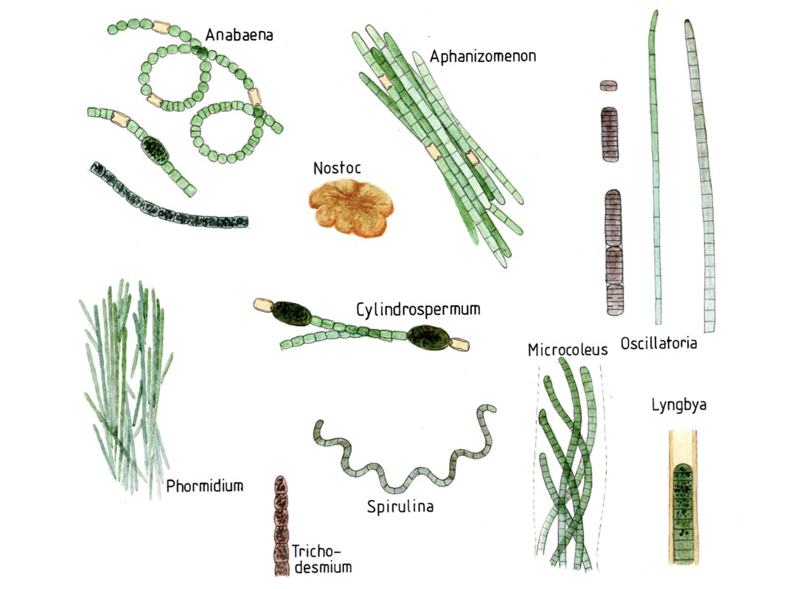
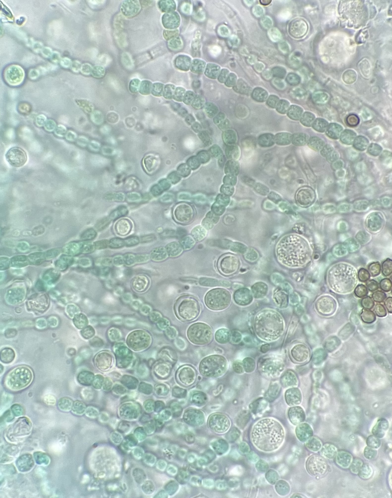

You may be wondering... what exactly are cyanobacteria? What do they do? Why should we care? Keep reading to find out...
 Cyanobacteria are photosynthetic prokaryotes found in well-lit aquatic and terrestrial environments. They are responsible for the evolution of oxygen on Earth, also known as the "Great Oxidation Event," due to their use of water as an electron donor during photosynthesis. Cyanobacteria synthesize chlorophyll a, a green pigment, and most others also produce a pigment called phycocyanin which presents as a blue color. This is why cyanobacteria are frequently referred to as "blue-green" (Whitton and Potts, 2012).
Quantitatively speaking, cyanobacteria are essentially the most important organisms on Earth, giving rise to about 3 x 10^4 grams of carbon globally (Garcia-Pichel et al., 2003).
Cyanobacteria exist in a variety of shapes. They can be unicellular, multicellular, different widths, tapered or not tapered, sheathed or not sheathed, and branched or not branched (Whitton and Potts, 2012). Picture from here.
Cyanobacteria are known to inhabit freshwater, saltwater, and soil habitats. Their ability to withstand elevated temperatures, desiccation, and UV exposure allows them to thrive in a wide variety of environments (Whitton and Potts, 2012). From a genome perspective, it has been discovered that there were major routes of cyanobacterial genome development, one being a genome streamlining strategy that allows for adaptations to highly specific niches (Larsson et al., 2011).
 A crucial role that cyanobacteria possess is the ability to fix N2 into usable forms of nitrogen. Nitrogen fixation occurs in the heterocysts of freshwater and terrestrial species (Wolk et al., 1994); however, some cyanobacteria can fix N2 even without heterocysts in well oxygenated environments. Further, there are few heterocystous species in the ocean, indicating that cyanobacteria are the main N2 fixers within the ocean (Díez et al., 2008). The ability to fix N2 provides cyanobacteria with a competitive advantage if total nitrogen concentrations are limited in their environment.
Cyanobacteria also form symbiotic relationships in which they supply fixed nitrogen to their partner. These relationships have been established for millions of years, but new relationships are being created through the purposeful inoculation of cyanobacteria on a plant to promote nitrogen uptake (Whitton and Potts, 2012).
Under these productive conditions, cyanobacteria can produce a wide range of toxic secondary metabolites, referred to as cyanotoxins. A wide variety of toxins exist that are produced by various taxa. Hence, these toxic compounds can fall under many categories, such as alkaloids, lipidic compounds, or peptides. Though not well understood, it is believed that cyanobacteria produce toxins for a competitive advantage or cellular defense in response to competition from grazing or resource scarcity (Dittman et al., 2013). (See also: cHAB tab)
Díez, B., Bergman, B., & El-Shehawy, R. (2008). Marine diazotrophic cyanobacteria: Out of the blue. Plant Biotechnology, 25(3), 221–225.
Dittmann, E., Fewer, D. P., & Neilan, B. A. (2013). Cyanobacterial toxins: Biosynthetic routes and evolutionary roots. FEMS Microbiology Reviews, 37(1), 23–43.
Garcia-Pichel, F., Belnap, J., Neuer, S., & Schanz, F. (2003). Estimates of global cyanobacterial biomass and its distribution. Algological Studies, 109(1), 213–227.
Larsson, J., Nylander, J. A., & Bergman, B. (2011). Genome fluctuations in cyanobacteria reflect evolutionary, developmental and adaptive traits. BMC Evolutionary Biology, 11(1), 187.
Whitton, B. A., & Potts, M. (2012). Introduction to the Cyanobacteria. In B. A. Whitton (Ed.), Ecology of Cyanobacteria II: Their Diversity in Space and Time (pp. 1–13). Springer Netherlands.
Wolk, C. P., Ernst, A., & Elhai, J. (1994). Heterocyst Metabolism and Development. In D. A. Bryant (Ed.), The Molecular Biology of Cyanobacteria (pp. 769–823). Springer Netherlands.